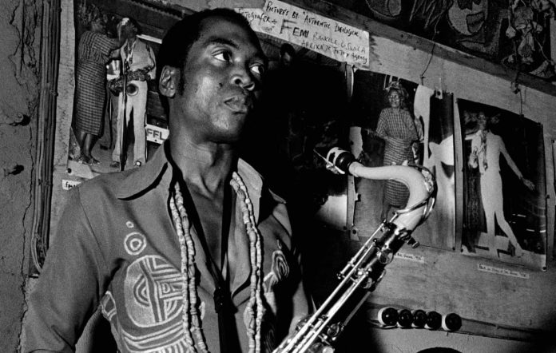
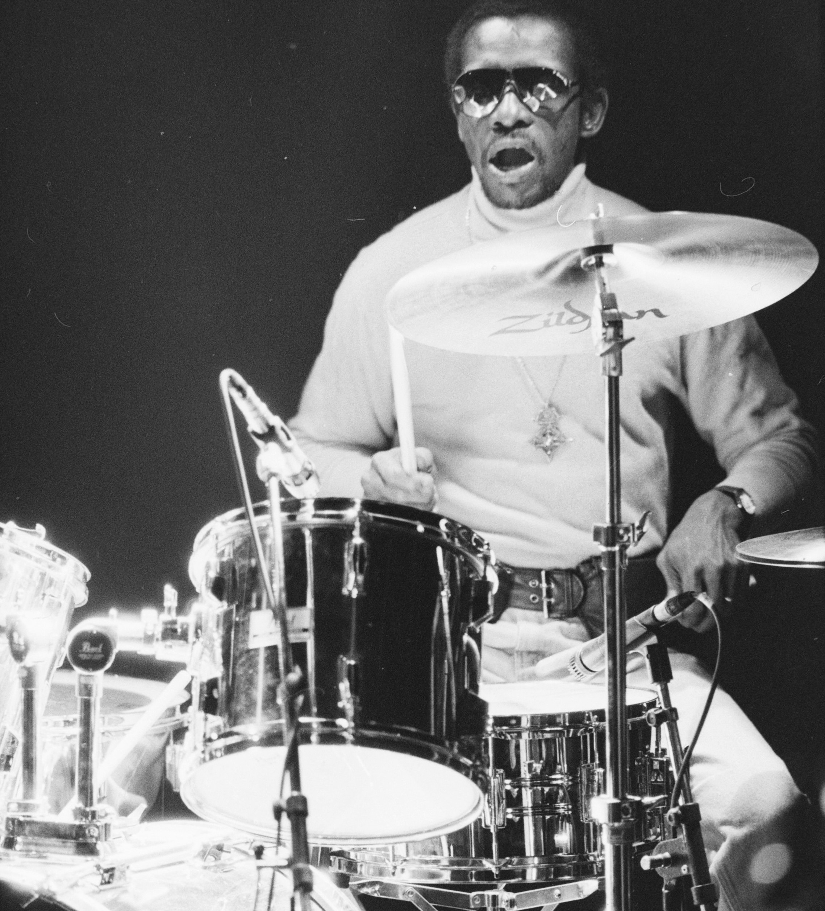

Afrobeats History
Afrobeats emerged in the 1960s and 1970s, largely credited to the legendary Fela Kuti, who blended traditional African rhythms with jazz, funk, and highlife. This innovative mix created a vibrant sound that became the cornerstone of modern Afrobeats. Alongside Fela, influential figures like Tony Allen, his groundbreaking drummer, and King Sunny Ade, a juju music pioneer, helped define the genre. The music of this era was not just about infectious beats; it was also a powerful platform for political activism, tackling issues like corruption and colonialism. This rich history laid the groundwork for Afrobeats to explode onto the global stage in the years to come.
Notable Pioneers
-
Fela Kuti
Known as the pioneer of Afrobeats, Fela Kuti blended traditional African rhythms with jazz and funk, creating a politically charged music style that addressed social issues.
 -
Tony Allen
As Fela Kuti's drummer, Tony Allen was instrumental in developing the complex rhythms that define Afrobeats, influencing countless musicians in the genre.
 -
King Sunny Ade
A key figure in juju music, King Sunny Ade incorporated traditional Yoruba sounds with modern instruments, contributing to the evolution of Afrobeats.

Listen to Pre-1990s Afrobeats Artists on YouTube Here!!!
Cultural Impact
The pre-1990s era of Afrobeats had a profound cultural impact, serving as a voice for social and political change in Nigeria and beyond. The genre's emphasis on rhythm and dance made it a popular form of expression at social gatherings, while its politically charged lyrics resonated with audiences facing oppression and inequality. This period laid the groundwork for the global recognition of Afrobeats, influencing future generations of musicians and contributing to the rich tapestry of African music.